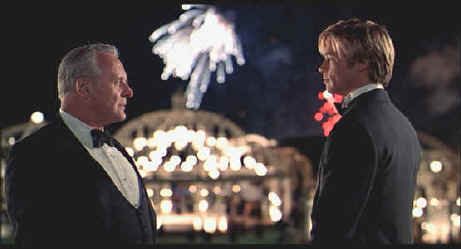

Universal/1998/180m/ANA 1.85
Inspired by the 1934 film Death Takes a Holiday starring Fredric March as Death, Meet Joe Black takes it's sweet time in every scene. It's economical predecessor runs 79 minutes while director Martin Brest's vision runs a mere three hours. Mere? Virtually every scene in Meet Joe Black could be shorter by a long shot. A good film surgeon may have brought Joe Black to earth with lots more intensity. Interestingly, the languorous pacing is felt more scene by scene as opposed to the overall length of the movie. I felt antsy as each scene ran too long, filled with repetition and dialogue pauses, but when the film was over I did not feel it ran three hours.
 |
Not enough fireworks in Meet Joe Black©Universal |
Approaching his sixty-fifth
birthday party with tolerance and reluctance, William Parrish is thrown for a loop when a
tightness in his heart accompanied by a strange voice suggests an unpleasant birthday
present. Parrish soon discovers that the voice is Death communicating with him for selfish
reasons. It turns out that Death wants a taste of life and is willing to give Parrish a
little bit more time on Earth if he will act as Death's tour guide. What's as guy to say?
Death turns up in the body of a recently deceased young man who happened to meet Parrish's
daughter and make an indelible impression on her. It's a handy coincidence. But is this
really the same guy she met at the coffee shop. In the midst of all the romance and life
questions, Parrish changes his mind about a buy-out of his empire, making for unconvincing
board room fireworks.
Joe Black is played by Brad Pitt. Pitt's an interesting choice
for Joe and manages to find a range of emotions, from charming to bewildered, to brazen
and demanding, to cold and sentimental, that almost give Meet Joe Black enough star
power to overcome its indolence. But there are lots of inconsistencies in the way Death
reacts to earthly things that make it difficult for Pitt and the script never really
develops or tackles some of the difficult questions that Death learning about life could
pose. Anthony Hopkins plays billionaire media mogul William Parish with surprisingly
little insight into the character. It's almost a breeze for him and while he is charming,
the character lacks the depth that might have injected an interesting edge to Meet Joe
Black. Clare Forliani gives Susan Parrish with a variety of smiles and flirtatious
glances. Jake Weber has the impossible task of bringing life to the ridiculously cardboard
character of Drew, Parrish's right hand that is holding a knife behind his back. Marsha
Gay Harden and Jeffrey Tambor add a nice level of humanity to the cold proceedings as the
older Parrish daughter and her husband.
The sumptuous settings are quite beautiful, but I actually found
the film closed and restricted in its point of view. I had the feeling Death was getting
cheated by not seeing and experiencing enough. Too bad Martin Brest didn't add more
locations for designer Dante Ferretti to create with his brilliant eye. Emmanuel Lubezki
manages the photography with grace.
Another very sharp DVD with no unsightly artifacts resulting. More and
more new DVD releases are appearing at or near perfection. There is some slight edge
enhancement visible at black transitions, though it truly does not disturb the picture.
Color and various light situations are handled perfectly. This is a bright and thoroughly
pleasing DVD to watch. The night party scenes sparkle with all the life of the fireworks
on display. A lot of the dialogue is delivered in hushed tones and I missed a few
pearls of wisdom, but the Dolby Digital 5:1 sound is in good balance. Thomas Newman's
score is lush with an openness. Production and cast and filmmakers bios, a theatrical
trailer and a Spotlight on Location short complete the DVD package.